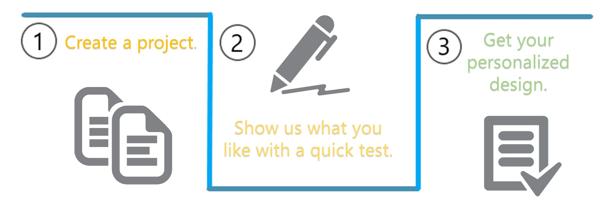

<link rel="import" href="../bower_components/polymer/polymer-element.html">
<link rel="import" href="shared-styles.html">
<link rel="import" href="../bower_components/iron-icons/iron-icons.html">
<link rel="import" href="../bower_components/paper-button/paper-button.html">


<dom-module id="my-main">
  <template>
    <style include="shared-styles">
      :host {
        display: block;

        padding: 10px;
      }
        
        .titleDiv{
            height: 20%;
            background-color: #BBB;
            text-align: center;
            padding-top: 5px;
        }
        
    </style>
        <body style="background-color: #eee">
        <div style ='text-align: center'>
            <div class="titleDiv">
              
            </div>
            <div style = "float: right; width:20%">
                <a href="" style="margin-right: 2%;font-size: 14px;">Log in</a>
                <a href="" style="font-size: 14px;">Sign Up</a>
            </div><br><br>
            <div class="simple" style="font-family: 'simplistic'">
                Making graphic design simpler, quicker and more satisfying.
            </div>
            <br>
                
            <br><br>
            <div style ="width: 90%; margin: 0 auto; ">
                <div class="simple" style="float:left; width:45%;">
                    Want to get started with your first design?<br>
                    <paper-button style="background-color: #77C;" on-click="register">Sign Up Here</paper-button>
                </div>
                <div class="simple" style="float:right; width:45% ">
                    Already started with us?<br>
                    <paper-button style="background-color: #88B;" on-click="logIn">Log In Here</paper-button>
                </div>
                
            </div><br><br><br><br>
      </div>
      </body>
  </template>

  <script>
    class MyMain extends Polymer.Element {
      static get is() { return 'my-main'; }
        ready(){
            super.ready();
        }
        
        logIn () {
            window.history.pushState({}, null, '/login');
            window.dispatchEvent(new CustomEvent("location-changed"));
        }
        
        register() {
            window.history.pushState({}, null, '/register');
            window.dispatchEvent(new CustomEvent("location-changed"));
        }
    }

    window.customElements.define(MyMain.is, MyMain);
  </script>
</dom-module>
